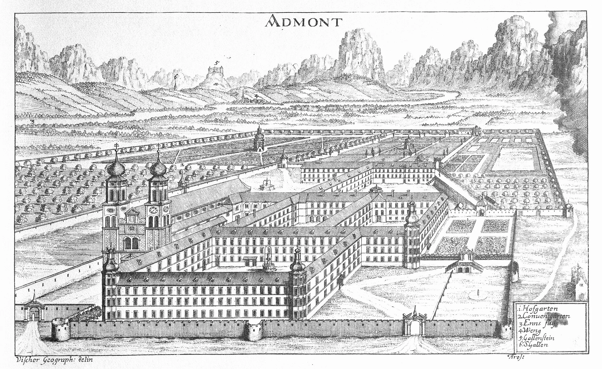

아직 펼치지 않은 카드
책으로 지은 궁전 · 1아드몬트 수도원 도서관알프스 골짜기의 한 수도원에 길이 70m의 ‘책의 방’이 있어요. 그 방에는 책 말고 무엇이 서 있을까요?산속 수도원에 엄청 큰 도서관이 있대! 책이 7만 권이나 있대.
1865년오스트리아 슈타이어마르크 · 아드몬트 수도원
아드몬트 수도원 도서관
1865년 4월, 알프스 골짜기의 아드몬트 수도원에 큰불이 났어요. 불이 지나간 뒤 남은 것은 도서관이었어요. 시간 막대를 밀어 같은 수도원의 네 때를 지나가 보세요.
산속 수도원에 큰불이 났는데, 도서관만 살아남았대. 옛날 그림부터 오늘 사진까지 넘겨 볼까?
검수 전 시안이에요(기준서 2판). 장면에는 아드몬트 수도원의 설명, 목격자의 글, 1890년대의 여행기(크라우스), 오스트리아 가톨릭 언론에 있는 것만 옮겼어요. 상상은 ‘눈 감고 상상해 보기’에만 썼어요.
시안 확인용카드 단계 미리 보기
1
빛이 마음을 채우는 방
1776년, 건축가 요제프 후버(Josef Hueber)가 설계한 도서관 홀이 다 지어졌어요. 길이 70m의 방이 세 부분으로 나뉘어 있어요.
천장의 그림 일곱 개는 바르톨로메오 알토몬테(Bartolomeo Altomonte)가 여든이 넘어 그렸어요. 생각과 말에서 시작해 학문을 지나, 둥근 천장 한가운데의 하느님의 계시에 이르는 사람의 앎의 길을 그렸다고 수도원은 설명해요.

“빛이 방을 채우듯, 마음도 채워야 한다.”
아드몬트 수도원 누리집의 도서관 설명 · 이 안내서가 옮김
지금 홀에는 책이 6만 권쯤 놓여 있어요. 수도원 전체로는 20만 점쯤의 책이 있고, 8세기부터의 손글씨 책 1,400권 넘게와 1500년 전에 찍은 책 530권도 있어요.
하얀 도서관에 책이 6만 권이나 있대! 천장에는 그림이 일곱 개나 있어.
물어보기빛이 마음을 채운다는 건 무슨 뜻일까?
2
네 때를 지나
같은 수도원을 담은 그림 네 장이 있어요. 1681년의 판화, 1856년 전의 석판화, 1865년 큰불 뒤의 그림, 그리고 2022년의 사진이에요.
네 그림은 보는 방향이 서로 달라요. 그래도 성당의 두 탑을 따라가면, 불이 지나간 자리가 보여요.
시간 막대를 밀거나 해를 눌러, 같은 수도원의 네 때를 지나가 보세요.



1681년 · 게오르크 마테우스 비셔의 판화 「아드몬트」, 1681년(비셔의 슈타이어마르크 그림 지도책에서) · 판화: 게오르크 마테우스 비셔 · 퍼블릭 도메인 · 위키미디어 공용1856년 전 · 프란츠 크사버 잔트만이 그린 「아드몬트」 석판화, 1856년 전 · 석판화: 프란츠 크사버 잔트만의 그림 · 퍼블릭 도메인 · 위키미디어 공용1865년 · 1865년 큰불 뒤 · 북쪽에서 수도원 성당 쪽을 본 그림, 앞쪽은 불탄 프라이들펠더 집(프란츠 팡크하우저) · 그림: 프란츠 팡크하우저 · 퍼블릭 도메인 · 위키미디어 공용2022년 · 남서쪽 하늘에서 본 오늘의 아드몬트 수도원(2022년 사진) · 사진: C.Stadler/Bwag · CC BY-SA 4.0 · 위키미디어 공용
네 때를 다 지나왔어요. 성당은 새 모습이 되었고, 도서관은 1776년의 모습 그대로 남았어요.
옛날 그림부터 오늘 사진까지 넘겨 볼까? 성당 탑 모양을 잘 봐!
물어보기불이 나기 전과 뒤에, 무엇이 가장 많이 달라졌어?
3
“수도원이 탄다!”
1865년 4월 27일 목요일 오후, 아드몬트 마을 한가운데의 농가 건물에서 불이 났어요. 불길은 곧 이웃 건물로, 그리고 수도원으로 번졌어요.
불을 본 블리트문트 추르첸탈러(Blitmund Tschurtschenthaler) 신부는 이렇게 적었어요.
“얼마 안 되어 시장 한가운데부터 수도원 성당까지 양쪽 집들과 옛 아만두스 성당이 불바다에 휩싸였다… 갑자기 무서운 외침이 울렸다. 수도원이 탄다!”
목격자 블리트문트 추르첸탈러 신부 · 아드몬트 수도원 누리집에서 · 이 안내서가 옮김
불은 닷새 동안 탔어요. 그 뒤에 도서관과 참사회실, 새 건물, 제의실은 거의 그대로 남았어요. 1890년대의 한 여행기는 “사람의 힘을 넘는 애씀으로” 도서관을 건져 냈다고 적었어요. 마을 사람 여럿이 목숨을 잃었어요.
수도원은 서둘러 ‘새 아드몬트’를 짓기로 했어요. 성당은 신고딕 양식(중세 고딕을 본뜬 그 시대의 양식)으로 새로 지었고, 도서관과 참사회실은 바로크 모습 그대로 두었어요. 크라우스의 여행기에 따르면, 다시 짓기를 이끈 카를만 히버(Karlmann Hieber) 수도원장은 새 성당이 봉헌되는 날을 보지 못하고 1868년 11월에 세상을 떠났어요.
마을에서 시작된 불이 수도원까지 번졌대. 그래도 도서관은 살아남았어.
물어보기불이 났을 때 사람들은 도서관을 어떻게 지켰을까?
4
이튿날 아침
불이 난 이튿날, 4월 28일이에요. 불은 아직 다 꺼지지 않았어요.
그날, 수도원의 한 참사 수도자(수도원 회의에 드는 수도자)는 이렇게 적었어요.
“오늘, 4월 28일, 아드몬트는 더는 없다. 도서관 말고는 모두 타 버렸다…”
그때 수도원의 한 참사 수도자 · 아드몬트 수도원 누리집과 katholisch.at(2024)에서 · 이 안내서가 옮김
불이 난 다음 날, 수도사님이 ‘도서관 말고는 다 탔다’고 적었대.
물어보기도서관만 남은 걸 본 수도사님은 어떤 마음이었을까?
눈 감고 상상해 보기
1865년 4월 28일 아침이에요. 골짜기에 연기가 낮게 깔려 있고, 탄 나무 냄새가 코를 찔러요. 무너진 벽 사이를 지나 걸어가요. 그 너머에 긴 건물 하나가 서 있어요. 창 너머로 하얀 책장과 금빛 장식이 보여요.
눈을 감아 봐. 아침인데 연기가 자욱해. 탄 냄새가 나. 무너진 벽 사이를 걸어가면, 하얀 책장이 그대로 있는 방이 보여!
나의 자리
불이 난 이튿날, 한 수도자는 그날을 한 줄로 적었어요. 내가 오늘 하루를 한 줄로 남긴다면, 무엇이라고 적을까요?
수도사님처럼 오늘 있었던 일을 한 줄로 적는다면, 뭐라고 쓸래?
마음에 닿는 한 줄을 고르거나 직접 써 보세요. 한 줄을 남기면 이 자리의 도장이 찍혀요. 이 기기에만 저장돼요.
더 깊이
궁금한 칸만 펼쳐 읽어도 괜찮아요.
알고 보면
불과 다시 짓기를 쓴 책 수도원 문서 보관소를 맡은 막시밀리안 시퍼뮐러(Maximilian Schiefermüller) 신부가 『1865년의 불과 슈타이어마르크 베네딕도회 아드몬트 수도원의 새 건물』을 썼어요. 목격자 블리트문트 신부의 글도 이 책에 실렸어요.
불을 기억하는 길 안내 수도원은 불이 난 날 무렵에 그날을 되짚는 특별 안내를 열어요. 2024년은 불이 난 지 159년이 되는 해였어요.
오늘의 장서 8세기부터의 손글씨 책 1,400권 넘게와 1500년 전에 찍은 책 530권이 수도원에 있어요.
기록마다 다른 점
불탄 집 수도원 누리집(2024)은 집 20채가 탔다고 하고, 오스트리아 포럼(위키백과를 옮긴 백과)은 시장의 집 22채라고 해요.
목숨을 잃은 사람 수도원과 katholisch.at은 ‘마을 사람 여럿’이라고만 쓰고, 크라우스의 여행기(1890년대)는 여섯 명, 오스트리아 포럼은 일곱 명이라고 적어요.
새 성당의 봉헌 수도원 누리집과 katholisch.at은 1868년, 크라우스의 여행기는 1869년 9월 12일이라고 적어요. 크라우스는 히버 수도원장이 그날을 보지 못하고 1868년 11월 13일에 세상을 떠났다고 해요.
책은 몇 권 앞면 이야기는 홀에 책이 7만 권쯤 있다고 하고, 수도원 누리집은 6만 권쯤이 놓여 있다고 해요.
직접 가 보기
확인한 날 · 2026년 11월 18일 · 바뀌기 쉬운 정보라 정기적으로 다시 확인해요
도서관과 박물관은 계절마다 여는 때가 달라요. 겨울에는 단체 예약만 받는 때가 있으니, 가기 전에 수도원 누리집에서 확인하세요.
네 때를 지나 금박
시간 막대로 네 때를 모두 지나오면 카드에 금박이 입혀져요.
1681년부터 2022년까지 네 때를 모두 지나오기
아이와 함께 채색
아이와 함께 끝까지 보면 카드가 채색돼요.
아이와 함께 ‘영화처럼 보기’를 끝까지 보기
근거 보기 (7)
- 아드몬트 수도원: 도서관 — 요제프 후버, 1776년 완성, 길이 70m·세 부분, 홀에 6만 권쯤·전체 20만 점, 손글씨 책 1,400권 넘게(8세기부터)·1500년 전 인쇄본 530권, 알토몬테의 천장 그림 일곱 개(여든 넘어)·앎의 길에서 하느님의 계시까지, 스타멜의 조각, ‘빛이 방을 채우듯 마음도’
- 아드몬트 수도원: 1865년 불 특별 안내(2024) — 1865년 4월 27일 목요일 오후, 마을 한가운데 농가 건물에서 시작, 이웃 건물과 수도원으로 번짐, 집 20채, 여러 주민이 숨짐, 닷새 동안의 불 뒤 도서관·참사회실·새 건물·제의실이 거의 그대로, ‘새 아드몬트’, 신고딕 성당(1868년 봉헌), 도서관과 참사회실은 바로크로, 그때 수도원의 한 참사 수도자가 남긴 4월 28일의 글, 159년
- 아드몬트 수도원: 1865년 불 특별 안내 — 목격자 블리트문트 추르첸탈러 신부의 글(양쪽 집들과 옛 아만두스 성당이 불바다, ‘수도원이 탄다!’), 도서관은 거의 피해를 입지 않음, 시퍼뮐러 신부의 책
- katholisch.at(2024년 4월 22일): 「Stift Admont: Sonderführungen und Buch zur Brandkatastrophe 1865」 — 4월 28일의 한 줄, 4월 27일 목요일 오후 농가 건물, 닷새, 도서관·참사회실·새 건물·제의실, 신고딕 성당 1868년 봉헌, 시퍼뮐러(수도원 부원장·문서 보관·사서)의 책(eos 출판사)
- Ferdinand Krauss, 『Die eherne Mark』 2권(1890년대, 오스트리아 포럼 디지털 책) — “사람의 힘을 넘는 애씀으로” 도서관을 건짐, 여섯 명이 숨짐, 카를만 히버 수도원장, 1869년 9월 12일 봉헌, 히버는 1868년 11월 13일 세상을 떠남
- 오스트리아 포럼(AustriaWiki): 아드몬트 — 1865년 4월 27일 시장의 집 22채, 일곱 명, 도서관만 남음
- 위키미디어 공용: 네 그림의 정보(비셔 1681 『Topographia Ducatus Stiriae』, 잔트만의 석판화·1856년 전·호펠리히 인쇄소, 팡크하우저의 1865년 그림·북쪽에서 본 성당·프라이들펠더 집, 2022년 남서쪽 하늘 사진)
그림·사진·소리 출처
‘처음 만나는 기독교 문화’의 깊은 카드예요. 실제 인물의 사진은 쓰지 않았어요. 카드 단계와 남긴 글은 이 기기에만 저장돼요.